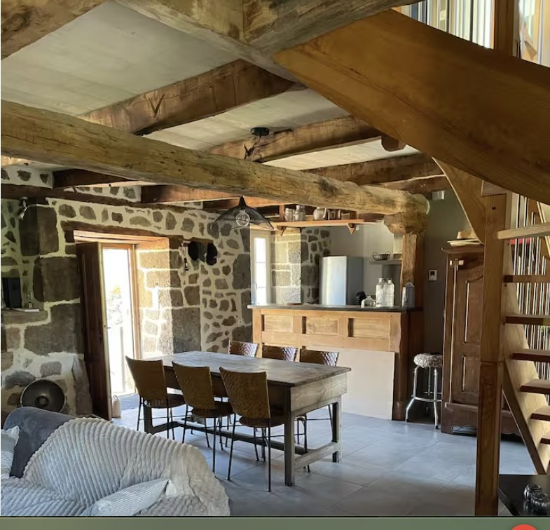
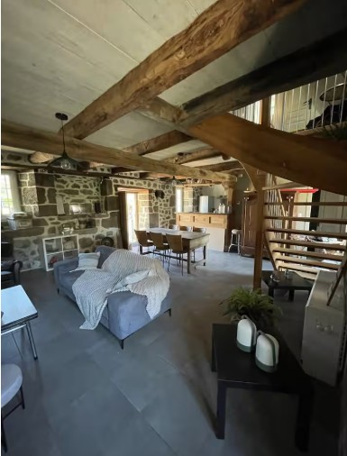
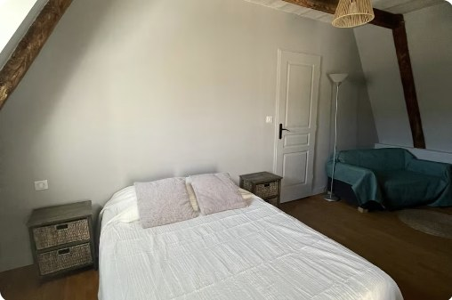
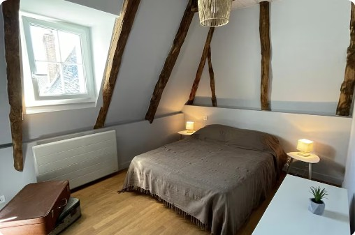
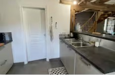
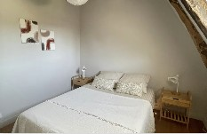
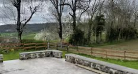
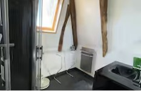
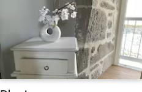

Chez Mimi Bistrot
Raulhac, le bourg
Bar-restaurant ouvert du mercredi au dimanche, 7h30–22h. Réservation conseillée.
04 63 41 92 01
Une bâtisse en pierre réveillée avec soin, blottie dans un hameau silencieux du Parc des Volcans d'Auvergne. Ici, le temps s'arrête — pour vous.

Une maison de pierre et de bois, où chaque détail raconte le Cantal.
Dans le hameau de Lavergne, sur la commune de Raulhac, cette ferme cantalienne a été restaurée avec un soin d'artisan : murs en pierre volcanique, charpente et poutres laissées apparentes, poêle à bois trônant au cœur du salon. Rien n'a été laissé au hasard, tout respire l'authenticité.
À quelques minutes de route, le Château de Messilhac — joyau de la Renaissance française dominant la vallée du Goul — et le Château de Cropières veillent sur la vallée depuis des siècles.
Autour de la maison, une arrière-cour privée en partie close, un espace repas en plein air et un barbecue au charbon de bois invitent à ralentir. Le hameau est silencieux, les voisins discrets, et un chemin de randonnée démarre à quelques pas de la porte.
La maison en images







Envie de venir la découvrir en vrai ? Réservez votre séjour →
Four, plaques, lave-vaisselle, réfrigérateur, cafetière.
Poêle à bois pour les soirées fraîches d'altitude.
6 voyageurs, linge de lit et de toilette fournis.
Télévision, bibliothèque, de quoi ne rien faire.
Arrière-cour privée, espace repas en plein air.
Au charbon de bois, chaises longues sur la terrasse.
Sur place et dans la rue, sans contrainte.
Fer à repasser, sèche-cheveux, produits de nettoyage.
Non inclus : Wifi, sèche-linge et climatisation — de quoi profiter pleinement du grand air du Cantal.
La maison se love au cœur du Parc naturel régional des Volcans d'Auvergne. Un chemin de randonnée démarre juste à côté du hameau ; plus loin, le Puy Mary — Grand Site de France — et le Super Lioran offrent panoramas et sentiers pour tous les niveaux, l'hiver venu la station se couvre de neige.
À deux pas, le Château de Messilhac, joyau Renaissance dominant la vallée du Goul, et le Château de Cropières se visitent depuis l'extérieur. Plus loin, Salers — classé parmi les plus beaux villages de France — et les petites cités de caractère du Cantal (Marcolès, Montsalvy, Pleaux) se découvrent au fil des routes de crête, jusqu'au viaduc de Garabit signé Gustave Eiffel.
Fromages AOP Cantal et Salers, aligot, truffade, marchés de producteurs : la cuisine du gîte, entièrement équipée, se prête aussi bien à un repas rapporté du marché qu'à une soirée aux fourneaux façon auvergnate.
En août, le festival de théâtre de rue d'Aurillac anime la région. Le reste de l'année, c'est le calme du hameau, un ciel dégagé propice aux étoiles, et le crépitement du poêle à bois qui rythment le séjour.
Raulhac, le bourg
Bar-restaurant ouvert du mercredi au dimanche, 7h30–22h. Réservation conseillée.
04 63 41 92 01Raulhac, le bourg
Hôtel-restaurant du village, pizzas au menu.
Pailherols, le bourg
Cuisine de terroir dans un village de moyenne montagne.
04 71 47 57 01Pailherols, le bourg
Table conviviale du village, réputée localement.
04 71 49 62 24Aurillac
Cuisine soignée au cœur de la préfecture du Cantal.
04 71 48 25 50Aurillac
Une des tables appréciées du centre historique.
04 71 48 48 97Chaudes-Aigues, Cantal
Table gastronomique et bistronomique étoilée — pour une soirée d'exception dans le Cantal.
Pour un repas simple sans bouger, l'épicerie-bar Le Bourguignon (Raulhac, 2 km) sert des pizzas le vendredi et le samedi, midi et soir.
Pailherols · 10 min
1er week-end de juin — fromages fermiers et savoir-faire du Cantal à l'honneur.
À 20 min
3e week-end de juillet.
Montsalvy · 1h
Fin juillet — marché de producteurs et artisans en fête dans le village.
Mur-de-Barrez · 15 min
Fin juillet, dans la petite cité de caractère.
Raulhac · 4 min
1er week-end d'août — juste à côté de la maison.
Lac des Graves, Lascelle · 50 min
Début août — le fromage AOP Cantal à l'honneur au bord de l'eau.
Murat · 45 min
3e semaine de septembre.
Prunet · 45 min
4e week-end de septembre.
Mourjou · 1h
Avant-dernier week-end d'octobre.
Dates données à titre indicatif d'une année sur l'autre — vérifiez le calendrier exact auprès des offices de tourisme du Carladès ou du Pays d'Aurillac avant de vous déplacer.
La maison se trouve à Lavergne, hameau de la commune de Raulhac, dans le Cantal — à proximité d'Aurillac, de Vic-sur-Cère, du Puy Mary et du Super Lioran. Commerces à 2 km. L'adresse exacte est communiquée après réservation.
Joyau de la Renaissance française dominant la vallée du Goul, à Raulhac.
L'un des plus beaux panoramas du Massif central, entre randonnée et routes de crête.
Ski l'hiver, randonnée et VTT le reste de l'année.
Préfecture du Cantal, célèbre pour son festival de théâtre de rue en août.
Station thermale et village fleuri au pied des monts du Cantal.
Un plan d'eau spectaculaire encaissé entre les gorges de la Truyère.
Commerces de proximité à 2 km du gîte.
« Coup de cœur voyageurs » — un accueil salué séjour après séjour.
« Impossible de mettre moins de 5 étoiles à cette maison. Le cadre est magnifique, la vue depuis la terrasse est magnifique. La restauration de cette vieille bâtisse a été faite avec beaucoup de goût. »
Stéphane« Excellent séjour dans la charmante maison de Martine et Claude qui sont très accueillants et au petit soin pour leurs hôtes. L'environnement est magnifique et paisible. »
Pascal« La maison est magnifique, posée dans un petit village paisible. Le poêle a donné à ce début d'automne pluvieux un côté chaleureux bienvenu. »
Jean-Marc« Leur maison est adorable, au calme et très bien équipée notamment dans la cuisine. Je recommande à 1000 pour cent. »
Yann« Nous avons passé un excellent séjour chez Martine. Jolie maison bien agencée avec tout le confort et très propre. En tout point conforme à la description. »
Annie« Je ne peux que recommander la location de cette maison typique de la région qui allie authenticité, confort et calme, aménagée avec goût. »
Guillaume« Maison très jolie, confortable et bien équipée, située dans un hameau, à côté d'un chemin de randonnée. Le voisinage est très agréable. »
Marta« Claude, le mari de Martine, nous a accueillis chaleureusement. Leur maison est adorable, au calme et très bien équipée. Je recommande à 1000 pour cent. »
Yann R.Choisissez vos dates ci-contre et envoyez votre demande de réservation directement à Martine & Claude. Vous recevrez une réponse — et une confirmation — sous 24h.